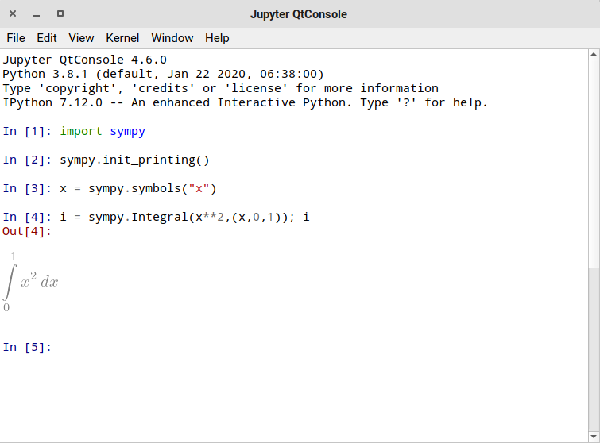
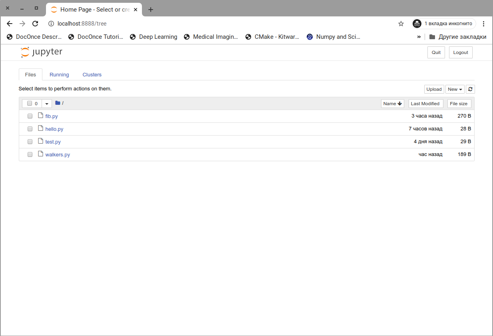
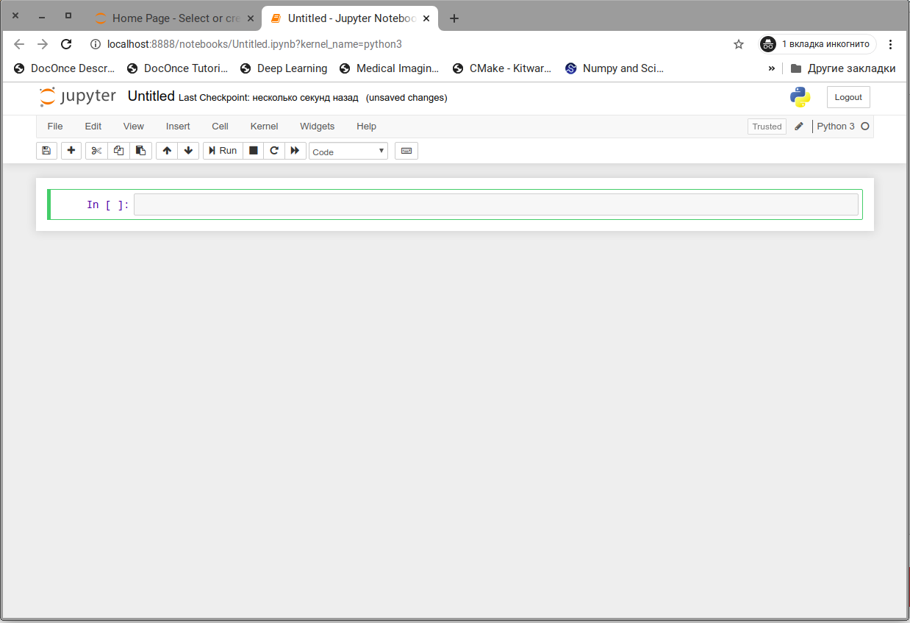
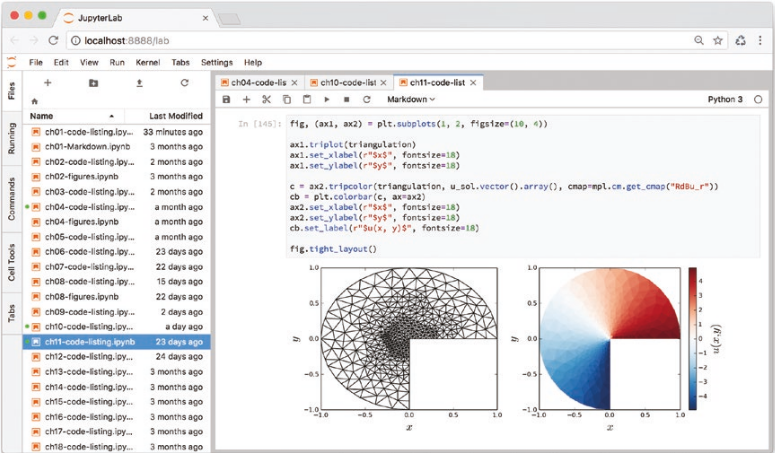

Проект Jupyter Проект Jupyter является побочным продуктом проекта IPython, который включает независимые интерфейсы Python — в первую очередь блокноты (notebook) — и коммуникационную структуру, которая позволяет отделить внешний интерфейс от вычислительных серверных частей, известных как ядра.
До создания проекта Jupyter, блокноты и базовая структура приложения для них были частью проекта IPython. Однако, поскольку внешний интерфейс для блокнотов не зависит от языка — его также можно использовать с большим количеством других языков, таких как R и Julia, — он был выделен из отдельного проекта, чтобы лучше обслуживать более широкое вычислительное сообщество и избегать предполагаемой предвзятости в сторону Python. Теперь роль IPython заключается в том, чтобы сосредоточиться на приложениях, специфичных для Python, таких как интерактивная консоль Python, и предоставить ядро Python для среды Jupyter.
В среде Jupyter интерфейс взаимодействует с серверными частями (ядрами). Интерфейс может иметь несколько зарегистрированных ядер, например, для различных языков программирования, для различных версий Python, или различных сред Python. Ядро поддерживает состояние интерпретатора и выполняет фактические вычисления, в то время как интерфейс управляет тем, как код вводится и организуется, и как результаты вычислений визуализируются пользователю.
Здесь мы рассмотрим Jupyter QtConsole и интерфейсы для блокнотов.
2: Больше информации по Jupyter доступно по ссылке: http:jupyter.org.
Jupyter QtConsole — это расширенное консольное приложение, которое
может служить заменой стандартной консоли IPython. QtConsole
запускается передачей аргумента qtconsole команде jupyter:
Terminal> jupyter qtconsole
Откроется новое приложение в системной консоли, способное отображать мультимедийные объекты, такие как рисунки и математические уравнения. Jupyter QtConsole также предоставляет механизм на основе меню для отображения результатов автозаполнения, и он запрашивает строки документации для функций во всплывающем окне при вводе открывающей скобки функции или вызова метода. Скриншот Jupyter QtСonsole показан на следующем рисунке:

Кроме интерактивной консоли Jupyter также предоставляет веб-приложение для блокнотов. Блокнот предоставляет много преимуществ по сравнению с традиционной средой разработки при работе с анализом данных и решением вычислительных задач. В частности, среда блокнота позволяет писать и запускать код, отображать выходные данные, произведенные кодом, а также документировать и интерпретировать код и результаты: все в одном документе. Это означает, что весь рабочий процесс анализа записывается в один файл, который впоследствии можно сохранить, восстановить и использовать повторно. Напротив, при работе с текстовым редактором или IDE код, соответствующие файлы данных и рисунки, а также документация распределяются по нескольким файлам в файловой системе, и для поддержания такого рабочего процесса требуются значительные усилия.
Jupyter Notebook оснащен богатой системой отображения, которая может
отображать мультимедиа, такие как уравнения, рисунки и видео, как
встроенные объекты в блокноте. Также возможно создавать элементы
пользовательского интерфейса с HTML и JavaScript, используя
систему виджетов Jupyter. Эти виджеты можно использовать в
интерактивных приложениях, которые связывают веб-приложение с кодом
Python, который выполняется в ядре IPython (на стороне сервера). Эти и
многие другие функции Jupyter Notebook делают его отличной средой для
интерактивных и грамотных вычислений. Для запуска среды Jupyter
Notebook аргумент notebook передается команде jupyter.
Terminal> jupyter notebook
Это запускает ядро ноутбука и веб-приложение, которое по умолчанию
обслуживает веб-сервер через порт 8888 на локальном хосте, доступ к
которому осуществляется через локальный адрес http://localhost:8888/
в
веб-браузере .
По умолчанию при запуске jupyter notebook в браузере открывается
страница с панелью инструментов. На панели инструментов перечислены
все блокноты, доступные в каталоге, из которого был запущен
Jupyter Notebook, а также простой обозреватель каталогов, который
можно использовать для навигации по подкаталогам относительно места,
где был запущен сервер, и для открытия блокнотров в нем. На рисунке
показан снимок экрана веб-браузера и страницы с панелью инструментов
Jupyter Notebook:

Нажатием кнопки «New» создадим новый блокнот и откроем его на новой
странице в браузере. Вновь созданный блокнот имеет имя Untitled или
Untitled1 и т.д. Блокнот можно переименовать нажав на поле с
заголовком в верхней части страницы. Файлы Jupyter Notebook
сохраняются в формате JSON со специальным разрешением ipynb. Файл
Jupyter Notebook не является чистым кодом на Python, но при
необходимости код на Python можно легко выделить из блокнота используя
либо меню File | Download as | Python или с помощью утилиты
nbconvert.

3: Это веб-приложение по умолчанию доступно только локально из системы, в которой было запущено приложение для ноутбука.
Jupyter Lab — это новая альтернативная среда разработки из проекта Jupyter. Она объединяет интерфейс Jupyter Notebook с файловым браузером, текстовым редактором, командной оболочкой и консолью IPython:

Среда Jupyter Lab объединяет в себе множество преимуществ среды для блокнотов и сильные стороны традиционных IDE. Доступ к консолям оболочки и текстовым редакторам в одном веб-интерфейсе также удобен при работе на сервере Jupyter, работающем в удаленной системе, например в вычислительном кластере или в облаке.
Основное содержимое блокнота, расположенное под строкой меню и панелью инструментов, организовано как ячейки ввода и вывода. Ячейки могут быть нескольких типов, тип выбранной ячейки можно изменять используя меню в панели инструментов. Наиболее важные типы:
Используя меню и панель инструментов, ячейки можно добавлять, удалять, перемещать вверх и вниз, вырезать и вставлять и т.д. Эти функции также связаны с сочетаниями клавиш, которые удобны и экономят время при работе с ноутбуками Jupyter. В ноутбуке используется двухрежимный интерфейс ввода: режим редактирования и командный режим. В режим редактирования можно войти, щелкнув ячейку или нажав клавишу ввода на клавиатуре, когда ячейка находится в фокусе. Находясь в режиме редактирования, содержимое ячейки ввода можно редактировать. Выход из режима редактирования осуществляется нажатием клавиши ESC или нажатием Shift-Enter для выполнения ячейки. В командном режиме стрелки вверх и вниз можно использовать для перемещения фокуса между ячейками, а ряд сочетаний клавиш сопоставляется с основными действиями по манипулированию ячейками, доступными через панель инструментов и меню.
Таблица 1. Клавиши
| Сочетание клавиш | Описание |
b | Создать ячейку ниже текущей |
a | Создать ячейку выше текущей |
d-d | Удалить текущую ячейку |
от 1 до 6 | Ячейка с заглавием раздела (heading) уровня от 1 до 6 |
x | Вырезать текущую ячейку в буфер обмена |
c | Скопировать текущую ячейку в буфер обмена |
v | Вставить ячейку из буфера обмена |
m | Преобразовать тип ячейки в Markdown |
y | Преобразовать тип ячейки в Code |
Up | Выбрать предыдущую ячейку |
Down | Выбрать следующую ячейку |
Enter | Войти в режим редактирования ячейки |
Escape | Выйти из режима редактирования ячейки |
Shift-Enter | Выполнить ячейку |
h | Показать окно помощи со списком сочетаний клавиш |
0-0 | Перезапустить ядро |
i-i | Прервать выполнение ячейки |
s | Сохранить блокнот |
Во время выполнения ячейки блокнота номер ячейки обозначается
звездочкой (In [*]), а индикатор в правом верхнем углу страницы
сигнализирует о том, что ядро IPython занято. Прервать выполнение
ячейки можно через меню Kernel | Interrupt или сочетанием клавиш
i-i в командном режиме (т.е., дважды нажать клавишу i). В таблице table:1
представлены наиболее популярные сочетания клавиш командного режима
Jupyter Notebook.
Одна из ключевых возможностей Jupyter Notebook заключается в том, что
ячейки с кодом и ячейки с результатом могут быть дополнены
документацией, содержащейся в текстовых ячейках. Текстовые ячейки
имеют тип Markdown. Входной текст преобразуется с использованием языка
разметки Markdown. Markdown разработан как легкая система набора
текста, которая позволяет преобразовывать текст с простыми правилами
разметки в HTML и другие форматы для более удобного
отображения. Правила разметки разработаны так, чтобы быть удобными для
пользователя и читаемыми, как в текстовом формате. Например, фрагмент
текста можно выделить курсивом, окружив его звездочками (*text*),
можно сделать полужирным, окружив двойными звездочками
(**text**). Markdown также позволяет создавать нумерованные и
маркированные списки, таблицы и гиперссылки. Расширение Markdown,
поддерживаемое Jupyter, заключается в том, что математические
выражения можно набирать в LaTeX с помощью библиотеки JavaScript LaTeX
MathJax.
Ниже приведем краткое описание синтаксиса Markdown.
Выделение.
Одинарные звездочки используются для выделения курсивом
это *выделенный* текст
Двойные звездочки используются для выделения полужирным
это **очень выделенный** текст
Код в строке.
Используйте функцию `printf()` для вывода.
Ссылки.
Инлайн ссылки
Это простая [ссылка](http://rukeba.com/) в тексте.
Это [ссылка](http://rukeba.com/ "Титул") с аттрибутом title.
Сноски
Это [ссылка][1] в справочном стиле.
...
...
[1]: http://rukeba.com/ "Необязательный титул"
Чтобы веб-адрес в тексте стал ссылкой его нужно обрамить < и >
По ссылке <http://python.org> находится сайт.
Изображения.

или в справочном стиле:
![alt-текст][2]
...
...
[2]: http://example.com/image.jpg "Необязательный титул"
Абзац.
<пустая строка>
Текст параграфа. Может быть
разбит на несколько строк.
<пустая строка>
Разрыв строки.
Что бы вставить перевод строки без начала нового параграфа, в конец нужно добавить два или больше пробелов.
Текст параграфа.<пробел><пробел>
Этот текст будет с новой строки.
Код.
Отступ в четыре пробела или один таб генерирует блок кода:
<пробел><пробел><пробел><пробел>print 'Hello, World!'
Горизонтальная линия.
* * *
или так:
***
или так:
------
Таблица.
| A | B | C |
|---|---|---|
| 1 | 2 | 3 |
| 4 | 5 | 6 |
Заголовки.
# Заголовок первого уровня H1
Цитаты.
> Это
> многострочная
> цитата
Списки.
Ненумерованный:
* красный
* зеленый
* синий
Нумерованный:
1. Первый
2. Второй
3. Третий
LaTeX.
Строчные формулы:
$\LaTeX$
Выключеная формула (с новой строки и по-центру):
$$
\LaTeX
$$
или
\begin{env}
...
\end{env}
Здесь env LaTeX окружение для формул: equation, eqnarray,
align и т.д.
Ячейки типа Markdown могут также содержать код HTML, и интерфейс Jupyter Notebook будет отображать его как обработанный HTML.
Больше информации о MathJax и Markdown доступно на страницах проектов: http://www.mathjax.com и http://daringfireball.net/projects/markdown/.